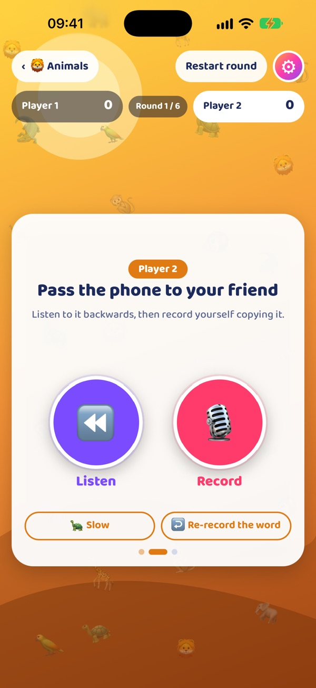

Email us and we'll get back to you, usually within two working days. Please include your iPhone or iPad model and iOS version.
Send email
How to play
- On the home screen tap Play. To choose what the word suggestions are about, pick a word theme first, for example Footballers or Christmas; Mixed draws from all of them.
- Player 1 records a word. Tap 🎲 Suggest a word for an idea: the word shows straight away. Tap it to hide it, and after that press and hold 👀 Hold to see to read it again. In Anything, you can type your own word.
- Player 1 taps the big microphone button, says the word, and taps the button again to stop.
- Hand the device to player 2, who taps Listen to hear the word in reverse, as many times as needed. 🐢 Slow plays it slowly.
- Player 2 taps Record, copies the backwards sound as closely as possible, and taps Stop.
- The app flips the copy back and plays it straight away, so it should sound like the real word. Make a guess! Hear my copy plays it again, and Try again lets player 2 have another go.
- Tap Show the answer. The original and the copy play one after the other, and the word is shown if player 1 used a suggestion or typed it.
- Tap Got it or Missed. A correct guess scores a point.
- Tap Next round. The players swap roles every round; after six rounds the app names the winner.
On your own? Tap Try it solo on the home screen: say a word, copy it backwards and hear your copy next to the original.

Frequently asked questions
The app says it needs the microphone
Say It Backwards needs the microphone to record your voice. If you tapped "Don't Allow", tap Open Settings under the record button (or open the Settings app and scroll down to Backwards) and turn on Microphone.
Why is the orange microphone dot on before I tap Record?
To make recording start the moment you tap, the app gets the microphone ready while a Record button is on screen. Nothing is kept from before your tap: that fraction of a second is cut from the recording, and if you leave the screen without recording, it is deleted.
It says my recording is too short
Recordings need to be at least a quarter of a second long. Tap the record button, say the word clearly, and tap the button again once you've finished speaking.
I can't hear anything
Turn up the volume with the volume buttons on your iPhone or iPad. The game plays sound even when the silent switch is on. If you use Bluetooth headphones, check they are connected.
How do I change the language?
Tap the colourful ⚙ button in the top-right corner and choose Türkçe or English. Word suggestions switch to the language you pick.
How do I turn off the button sounds?
Open ⚙ Settings and switch off App sounds. Your recordings still play as normal.
How does the score work?
A game is six rounds. Player 1 says the word in rounds 1, 3 and 5 and player 2 in rounds 2, 4 and 6, so both guess three times. The guesser gets a point when you tap Got it. After round six the app shows who won, and New game starts again from 0–0.
Can we use our own names?
Yes. Tap the score row at the top of the game screen and type a name for each player. Names are optional and are forgotten when you close the app.
Can I play alone?
Yes. Tap Try it solo on the home screen. You say a word, listen to it backwards, copy it, and then hear your copy flipped back next to the original. There is no score in solo play.
The backwards word is too fast to copy
On the Listen screen tap 🐢 Slow. The backwards word then plays more slowly, without changing its pitch. Tap it again for normal speed.
How do I see the short try-out again?
The first time you open the app it walks you through one round with your own voice. To see it again, open ⚙ Settings and tap How to play.
What does "Restart round" do?
It clears the recordings of the current round and starts that round again, with the same player saying the word. The score does not change.
Why are there ads?
Ads keep the game free. There is a small banner at the bottom of the game screen and a full-screen ad after every third finished round, shown when you start the next round. The try-out has no ads.
Are my recordings saved or shared?
No. Recordings stay on your device, are only used for the current round, and are deleted when you start the next round or leave the game screen. See the Privacy Policy.
Does it work on iPad?
Yes. Say It Backwards has its own larger layout on iPad, in portrait and landscape.
Is there an Android version?
Not yet. Say It Backwards is currently available for iPhone and iPad.